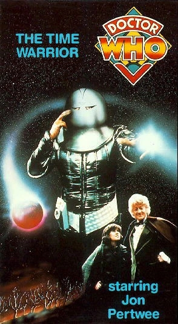
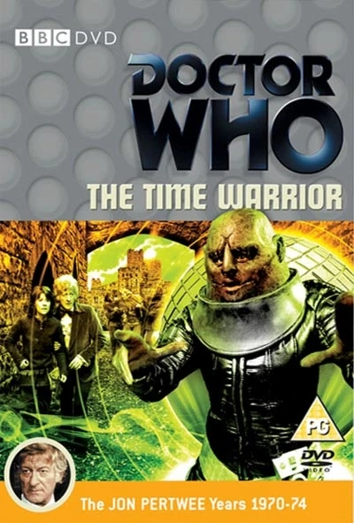
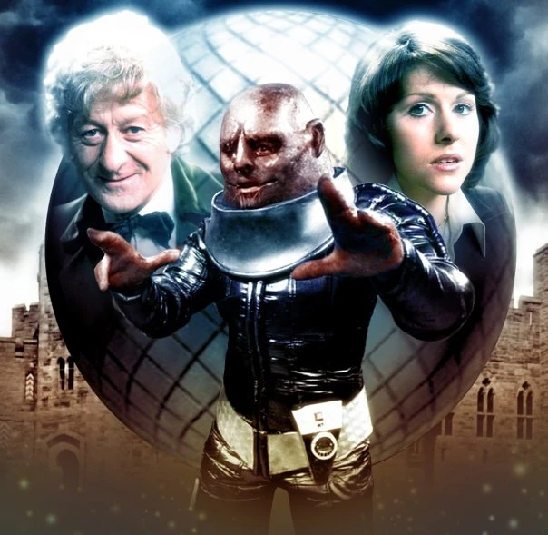

Эра Третьего Доктора (11 сезон)
<<< НАЗАД ||| 1. Воин времени ||| ДАЛЬШЕ >>>
Субтитры: Русские и Английские |  |
|---|---|
с обновленными спецэффектами Субтитры: Русские и Английские | |
Дата выхода: 15 декабря 1973 - 5 января 1974
Формат: 4 эпизода по 25 мин.
| Все эпизоды сохранились в цвете (видеокассета PAL 2") |
|---|
 |  помощник |
Сонтаранский воин Линкс терпит крушение на Земле и похищает учёных из секретной станции 1970-х, заставляя их чинить корабль. Параллельно он снабжает средневекового бандита Иронгрона футуристическим оружием. Бригадир расследует исчезновения, а журналистка Сара Джейн Смит проникает на станцию под видом своей тёти — и в итоге оказывается на борту ТАРДИС. Дебют Сары Джейн, первое появление сонтаранцев и новая заставка с временным туннелем.
 VHS - июнь 1989 |   DVD+Boxset - 3 сентября 2007 * Версия в нашей группе |
|---|



Трейлер: